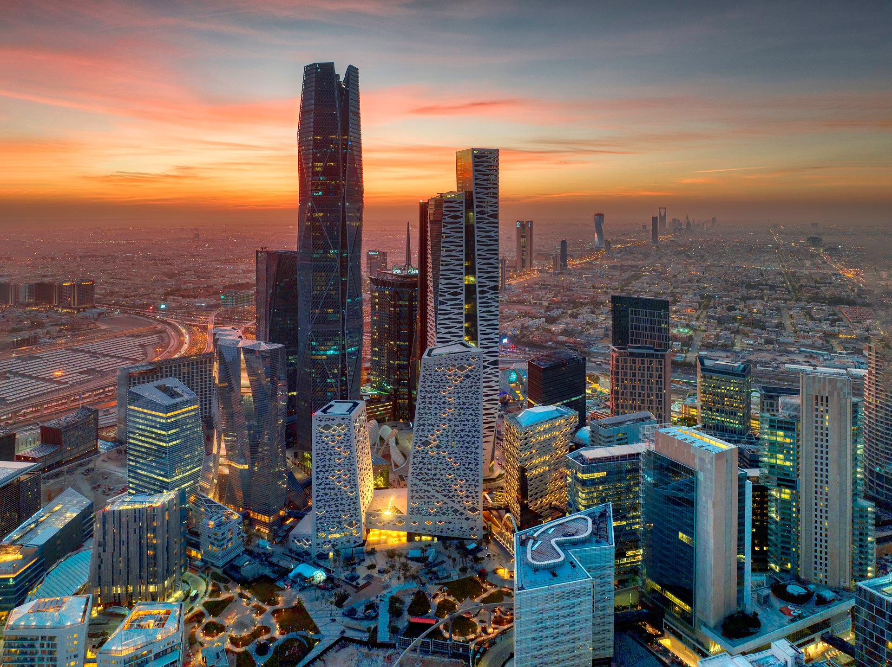
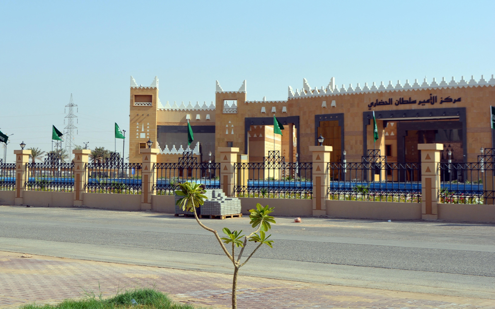
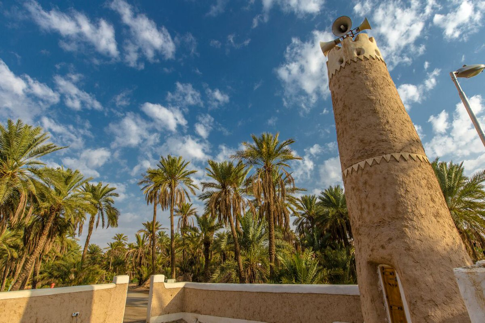
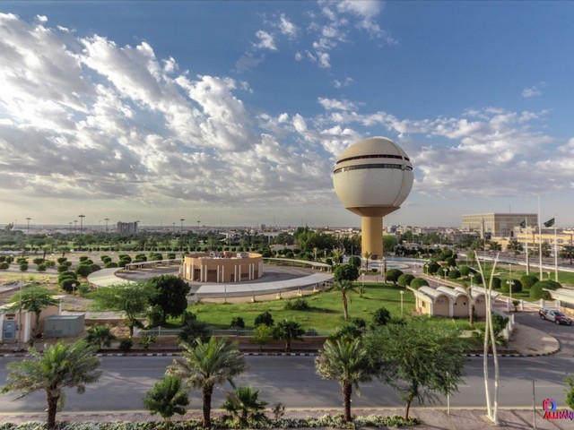

الرياض
الرياض، عاصمة المملكة، تجمع بين ناطحات السحاب الحديثة والكنوز التاريخية مثل قلعة المصمك. يمكن للزوار الاستمتاع بالمتاحف الثقافية، والمطاعم الفاخرة، والحياة الحضرية النابضة التي تمثل قلب السعودية.




المملكة العربية السعودية دولة ذات تراث غني وتطور سريع، تقع في قلب شبه الجزيرة العربية. هي مهد الإسلام وموطن مكة والمدينة، تجمع بين التقاليد العميقة ورؤية حديثة للمستقبل.
اختبر معرفتك بالثقافة السعودية من خلال تجربة ممتعة وواقعية.
ابدأ الآن